Aplikacje WEB stanowi¹ istotny
element wspó³czesnych systemów informatycznych.
Umo¿liwiaj¹ one dostêp i interakcjê do rozlicznych serwisów i systemów
informatycznych
w œrodowisku rozproszonym, sieciowym, przy wykorzystaniu prostych
i
uniwersalnych protoko³ów. Temat jest niezwykle rozleg³y, móg³by
stanowiæ
w³aœciwie treœæ odrêbnej, du¿ej monografii. Tutaj przedstawimy
wprowadzenie
do tej tematyki, staraj¹c sie przy tym podaæ podstawy - niezbêdne
i przydatne
do dalszego studiowania technologii programowania aplikacji WEB. W
pierwszej czeœci zajmiemy siê tworzeniem prostych serwletów i
zgadnieniem ich wdra¿ania.
1. Technologie programowania aplikacji
WEB
Korzystaj¹c z Internetu na co dzieñ stykamy siê z aplikacjami WEB.
Aplikacje WEB stanowi¹ zestaw komponentów
programistycznych, dzia³aj¹cych
po stronie serwera i dynamicznie reaguj¹cych na zlecenia ze strony
programów
klienckich, zg³aszane za poœrednictwem protoko³u sieciowego (w
szczególnoœci
HTTP).
Aplikacje WEB maj¹ szerokie zastosowania, g³ównie w Internecie i
intranecie, obejmuj¹ce m.in.:
- dynamiczne generowanie treœci stron WWW,
- proste,
bezpoœrednie przetwarzanie zleceñ klienckich,
- kontrolowanie
komunikacji z klientami - statystyki, zabezpieczenia, odtwarzanie
informacji (sesje, cookies),
- dostarczanie informacji z baz
danych,
- poœredniczenie pomiêdzy programami klienckimi, a
systemami informacyjnymi
firmy w wykonywaniu zadañ z zakresu z³o¿onej logiki biznesowej.
Wspomniane programy klienckie s¹ zazwyczaj przegl¹darkami stron
WWW (ze wzglêdu
na uniwersalny, powszechnie dostêpny charakter tego interfejsu), ale
mog¹
równie¿ obejmowaæ takie komponenty jak aplety, czy nawet stanowiæ
wyspecjalizowane
"wolnostoj¹ce" programy. Takie programy i takie aplety bed¹ wtedy
stanowiæ
"klienck¹" czêsæ aplikacji WEB. W ka¿dym przypadku jednak j¹drem
aplikacji s¹ komponenty
dzia³aj¹ce po stronie serwera.
Œrodowisko Javy doskonale nadaje siê do tworzenia aplikacji WEB,
bowiem:
- dostarcza wyspecjalizowanych technologii tworzenia tzw.
web-komponentów,
czyli komponentów, które obs³uguj¹ zlecenia, a w szczególnoœci potrafi¹
reagowaæ
na nie dynamiczn¹ generacj¹ treœci,
- implementuje koncepcje
programowania kompnentowego (JavaBeans), co
sprzyja nie tylko prostocie tworzenia aplikacji (np. w œrodowiskach
programistycznych),
ale równie¿, czy mo¿e przede wszystkim, elastycznemu separowaniu treœci
i
prezentacji,
- zapewnia uniwersalny, spójny z innymi œrodkami
jêzyka, mechanizm dostêpu do baz danych (JDBC),
- wzmacnia to
wszystko bogactwem standardowych pakietów Javy, które
- oczywiœcie - mo¿emy wykorzystywaæ na poziomie apliakacji WEB.
Przyk³adowy schemat dzia³ania aplikacji WEB pokazuje rysunek.
Rys. Dzia³anie aplikacji WEB

1 - zlecenie klienta
2 -
odebrane przez kompoenn WEB
3 - odow³anie do klas realizuj¹cych
logikê
4,5 - siêgniêcie po dane i ich odbiór
6 -
komponent WEB odbira wyniki pretwarzania,
7,8 - przekazanie
wyników klientowi
Podstawow¹ technologi¹, s³u¿¹c¹ w Javie do tworzenia aplikacji WEB
jest technologia serwletów (Java Servlet Technology).
Serwlet jest klas¹ Javy, rozszerzaj¹c¹
funkcjonalnoœæ serwerów
w przetwarzaniu zleceñ programów klienckich.
Przy programowaniu
serwletów
wykorzystujemy klasy z pakietu javax.servlet - stanowi¹cego
interfejs programistyczny
Servlet API. Klasy te i ich metody dostarczaj¹ ró¿norodnych œrodków
odbierania
i reagowania na zlecenia klientów oraz przesy³ania im wyników
(odpowiedzi).
Serwlet mo¿e (a nawet powinien) pelniæ rolê kontrolera w
aplikacjach
WEB budowanych w oparciu o paradygmat "Model-View-Controller" i
zajmowaæ
siê odbieraniem zleceñ, zarz¹dzaniem nimi, przekazywaniem ich innym
komponentom
programowym, odbieraniem od nich wyników i przekazywaniem modu³om
prezentacyjnym.
Wa¿ne jest przy tym, by w strukturze aplikacji WEB wystêpowa³a wyra¿na
separacja
pomiêdzy danymi, a ich prezentacj¹.
Technologia serwletów - jako najwczeœniejsza technologia programowania
komponentów
Web w Javie - nie wymusza jednak spe³nienia tego wymagania. Nader
czêsto
serwlety u¿ywane by³y (i s¹) do generowania dynamicznych stron WWW w
taki
sposób, ¿e kod odpowiedzialny za prezentacjê (tworzenie wygl¹du strony)
zmieszany
jest z kodem, odpowiedzialnyn za logikê przetwarzania danych.
Niejednokrotnie
takiego pomieszania - w przypadku "czystych" serwletów trudno jest
unikn¹æ.
Technologia Java Server Pages (JSP) po czêœci odpowiada na
to wyzwanie,
jednoczeœnie nieco upraszczaj¹c tworzenie czeœci aplikacji webowych,
szczególnie
tych odpowiedzialnych za wygl¹d. Traktowana najpierw jako g³ównie
swoisty
jêzyk skryptowy (strona JSP zawiera statyczn¹ treœæ np. w jêzyku HTML
oraz
treœæ dynamiczn¹, generowan¹ przez elementy JSP), obecnie akcentuje
deklaratywne
znaczniki, które - w trakcie interpretacji strony - "wywo³uj¹"
okreœlone
procedury. Wprowadzeniu standardowej biblioteki znaczników (Java
Server Pages Standard Tag Library) da³o twórcom aplikacji WEB
uniwersalne i stosunkowo ³atwe (przede wszystkim
dla tych co nie znaj¹ Javy) sposoby uzyskiwania ró¿norodnej
funckjonalnoœci.
W pewnym sensie JSP jest "tylko" nak³adk¹ na serwlety: istotnie strony
JSP
s¹ - przy pierwszym do nich odwo³aniu - t³umaczone na serwlety, a te
ostatnie
sa kompilowane "w locie" i wykonywane przez serwer aplikacji.
I wreszcie, swoistym uzupe³nieniem do "czystych" serwletów i JSP
jest technologia Java Server Faces
. przeznaczona do elastycznego generowania GUI aplikacji WEB po stronie
serwera, ale przede
wszystkim umo¿liwiaj¹ca lepsz¹ separacjê modeli i widoków, której -
mimo wszystko - JSP do koñca nie zapewnia.
Relacje pomiêdzy podstawowymi technologiami Javy, s³u¿¹cymi
tworzeniu aplikacji WEB przedstawia rysunek.

Nowe
trendy w tworzeniu aplikacji WEB dotykaj¹ przede wszystkim u³atwionych
sposobów programowania (tutaj wymieniæ mo¿na œrodowisko Grails = Groovy
on Rails), a tak¿e zmian po stronie programowania klientów, zwi¹zanych
z zastosowaniem rozbudowanych bibliotek JavaScript i technologii (czy
raczej podejœcia) AJAX. AJAX (Asynchrounous Java Script and XML) polega
na asynchronicznym (nie wymagaj¹cym prze³adowania stron)
odbierania przez klienta danych od serwera, co umozliwia tworzenie
prawdziwie interaktywnych stron WEB.
Omówimy zagadnienia zwi¹zane z
konstrukcj¹, rozwijaniem
i wdra¿eniem aplikacji WEB, skupiaj¹c uwagê na serwletach. Niestety,
ograniczona
objêtoœæ nie pozwala na pe³niejsze przedstawienie technologii JSP i
Java Server Faces.
Ta pierwsza jest zreszt¹ technologi¹ raczej "nieprogramistyczn¹".
Co wiêcej, w przypadku obu tych technologii mamy wyraŸne odniesienia do
serwletów,
które stanowi¹ dla nich bazê. Dlatego opanowanie programowania
aplikacji
WEB g³ównie pod k¹tem serwletów nie jest strat¹ czasu: bêdzie sprzyjaæ
³atwiejszemu
i pe³niejszemu rozumieniu rozszerzaj¹cych mechanizmów JSP i JSF.
Równie¿ AJAX
dobrze wpisuje siê w zastosowania serwletów jako podstawoego
"budulca" modu³ów dzialaj¹cych po stronie serwera.
2.
Struktura i kontekst aplikacji WEB
Aplikacje WEB wykonywane
s¹ w œrodowisku serwerów aplikacji. Serwery zarz¹dzaj¹ aplikacjami i
ich wykonaniem
(np. w szczególnoœci ³adowaniem i wywo³ywaniem serwletów,
przekazywaniem
zleceñ, polityk¹ bezpieczeñstwa itp.). Aby to robiæ, serwery musz¹ mieæ
dostêp
do informacji o aplikacji, jej umiejscowieniu i pewnych w³aœciwoœciach.
Nie wystarczy zatem samo oprogramowanie i skompilowanie programów
(klas),
trzeba jeszcze aplikacjê skonfigurowaæ, distarczyæ odpowiednich
informacji
o niej oraz odpowiednio umiejscowiæ. Nazywa siê to wdro¿eniem (deployment)
aplikacji.
Istnieje wiele ró¿nych serwerów
aplikacji (np. IBM WebSphere, JBoss,
BEA WebLogic), które wraz z obs³ug¹ aplikacji WEB œwiadcz¹ us³ugi
typu "middleware"
w oparciu o platformê Enterprise Java Beans (w ramach tych serwerów
aplikacji
mo¿na wyró¿niæ serwer EJB i serwer WEB). Istniej¹ te¿ samodzielne
serwery
WEB, które zajmuj¹ siê przede wszystkim obs³ug¹ aplikacji WEB (np.
Tomcat), ew. dodatkowo umiej¹c ³¹czyæ sie z serwerami EJB.
Proces wdra¿ania aplikacji WEB na wszystkich tych serwerach jest ideowo
podobny i (ogólnie) polega na:
- stworzeniu pliku tzw. deskryptora wdro¿enia (web
deployment descriptor) o nazwie web.xml,
-
ew. stworzenie dodatkowych specjalnych plików opisowych (np. dla
bibliotek znaczników JSP),
-
umiejscowienie wszystkich komponentów aplikacji (klas, stron HTML,
stron
JSP, plików graficznych i dŸwiêkowych) oraz pliku deskryptora wdro¿enia
w
odpowiedniej, œciœle okreœlonej, strukturze katalogowej,
-
dostarczenie serwerowi œcie¿ki kontekstu aplikacji (context-path).
Zacznijmy od koñca. Ka¿da aplikacja WEB ma swój kontekst
swoiste
œrodowisko izolowane od innych aplikacji dzia³aj¹cych na danym
serwerze.
Kontekst umo¿liwia m.in wymianê i dzielenia informacji pomiêdzy
komponentami
tej samej aplikacji (np. róznymi serwletami, które stanowia jej
komponenty),
jak równie¿ komunikowanie siê aplikacji z serwerem. Serwer uruchamia
aplikacjê
w jej kontekœcie (tworzy dla niej kontekst) i identyfikuje j¹ poprzez
nazwê
kontekstu (œcie¿kê kontekstu). Aplikacja jest reprezentowana przez jej
kontekst. Œcie¿ka kontekstu s³u¿y tak¿e do wywo³ywania
aplikacji lub jej czêœci z poziomu programów klienckich. Pomiêdzy
œcie¿k¹
kontekstu a realnym umiejscowieniem struktury katalogowej
aplikacji na fizycznej
maszynie musi byæ ustanowiona odpowiednioœæ (inaczej serwer nie
odnalaz³by
komponentów aplikacji).
Struktura katalogowa aplikacji jest œciœle okreœlona.
Komponenty i deskryptory aplikacji musz¹ byæ ulokowane w nastêpuj¹cy
sposób:

G³ówny katalog aplikacji - MojaAp (1) zawiera katalog WEB-INF oraz
mo¿e, ale nie musi zawieraæ strony
JSP, a tak¿e dowolne komponenty typu dokumenty HTML, XML. pliki
graficzne
itp. (dostêpne dla u¿ytkownika).
Kluczow¹ rolê spe³nia podkatalog WEB-INF (2). Zawiera on:
- plik deskryptora wdro¿enia (web.xml) - koniecznie!
- pliki deskryptorów znaczników bobliotek JSP (z rozszerzeniem *.tld)
- o ile stosujemy biblioteki znaczników,
- plik konfiguracji
Java Server Faces (faces-config.xml) - o ile stosujemy JSF,
- podkatalog
lib (5), zawieraj¹cy dzielone biblioteki (pakiety) Javy
w postaci plików JAR - jeœli tylko nasze klasy tego wymagaj¹ ,
- podkatalog
classes (4), który zawiera skompilowane klasy Javy
(m.in. serwlety, ale równie¿ inne); je¿eli klasy nale¿¹ do nazwanych
pakietów,
to musz¹ byæ umieszczane w odpowiednich podkatalogach katalogu class.
Ta struktura katalogowa odwzorowywana jest na œcie¿kê kontekstu
przy wdro¿eniu.
3. Wdra¿anie i uruchamianie aplikacji WEB. Deskryptor
wdro¿enia
W œrodowisku serwera Tomcat (a bêdziemy pos³ugiwaæ siê i omawiaæ
konkretne
przyk³ady w³aœnie dla Tomcata) istniej¹ trzy sposoby wdro¿enia
gotowej aplikacji, przygotowanej w pokazanej wy¿ej strukturze
katalogowej:
- skopiowanie tej struktury do katalogu okreslanego
przez w³aœciwoœæ appbase konfiguracji serwera;
standardowo- katalogu webapps, znajduj¹cym
siê w katalogu instalacyjnym Tomcata - œcie¿k¹ kontekstu
dla schematu z rysunku bêdzie wtedy /MojaAp (lub - jeœli nie kopiujemy
ca³ego katalogu
MojaAp, lecz tworzymy w webapps katalog o innej nazwie i
kopiujemy do niego
ca³¹ zawartoœæ katalogu MojaAp - nazwa nowoutworzonego katalogu
poprzedzona
ukoœnikiem).
- spakowanie tej struktury do archiwum o
nazwie, maj¹cej rozszerzenie WAR (od Web Application Archive) i
skopiowaniu tego WAR-a do katalogu webapps - œcie¿k¹ kontekstu
dla schematu z rysunku bêdzie /MojaAp,
- utworzenie deskryptora
kontekstu aplikacji, w którym m.in podajemy
odwzorowanie pomiêdzy œcie¿k¹ kontekstu a katalogiem aplikacji;
deskryptor
ten mo¿na wpisac do pliku konfiguracyjnego serwera conf/server.xml,
albo
stworzyæ go w odrêbnym pliku XML o nazwie kontekstu i
umieœciæ ten plik w
katalogu conf/Catalina/host - wtedy œcie¿ka kontekstu
bêdzie pobrana z deskryptora kontekstu.
Na starcie Tomcat tworzy i uruchamia konteksty
aplikacji, zarejestrowanych w jeden z trzech w/w sposobów.
Jak ju¿ wspomniano, kluczow¹ rolê dla aplikacji WEB odgrywa
deskryptor wdro¿enia - plik web.xml.
Jest to plik XML, którego elementy okreœlaj¹ wdro¿eniowe w³aœciwoœci
aplikacji.
Nale¿¹ do nich:
- definicje filtrów (dodatkowo przetwarzaj¹cych,
filtruj¹cyhc, zlecenia dla serwletów i ich odpowiedzi)
- definicje
s³uchaczy (obs³uguj¹cych zdarzenia zwi¹zane z kontekstem i sesj¹),
- definicje serwletów (i ich parametrów inicjalnych) lub stron JSP
sk³adaj¹cych siê na aplikacjê oraz tzw. ich mapowanie,
- konfiguracja
sesji (czyli po³¹czenia lub takich sekwencji po³¹czeñ
u¿ykownika z aplikacj¹, które zachowuj¹ to¿samoœæ u¿ytkownika)
- parametry
kontekstu (dostêpne dla wszystkich komponentów aplikacji),
- mapowanie
typów MIME.
- strony powitalne,
- strony opisu b³êdów,
- lokalizacj deskryptorów bibliotek znaczników JSP (plików *.TLD)
- ograniczenia ze wzglêdu na bezpieczeñstwo.
- definicje
odniesieñ do zasobów (np. baz danych),
W³aœciwoœci s¹ definiowane za pomoc¹ znaczników XML, okalaj¹cych
wartoϾ
w³aœciwoœci. Znaczniki (otwieraj¹cy i zamykaj¹cy) wraz z umieszczonym
pomiêdzy
nimi cia³em nazywane s¹ elementami. Elementy mog¹ byæ zagnie¿d¿one. Np.
nastêpuj¹cy
element XML:
<session-config>
<session-timeout>30</session-timeout>
</session-config>
okreœla konfiguracjê sesji i zawiera element session-timeout,
okreœlaj¹cy
ile czasu nieaktywne po³¹czenie ma zachowywaæ sesjê (tu 30
minut).
Jak ka¿dy plik XML - deskryptor wdro¿enia rozpoczynamy znacznikiem:
<?xml version="1.0" encoding=charset?>
gdzie jako charset podajemy konkretn¹ stronê kodowa.
Nastêpnie otwieramy g³ówny element znacznikiem <web-app ....
>,
Dla wersji 2.4 Servlet API w otwieraj¹cym znaczniku <web-app ...
>
podajemy lokalizacjê definicji formatu i znaczenia elementów
deskryptora
- jak poni¿ej.
W g³ównym elemencie umieszczone s¹ wszystkie inne elementy, opisuj¹ce
w³asciwoœci aplikacji.
Wygl¹da to w nastêpuj¹cy sposób:
<?xml version="1.0" encoding="UTF-8"?>
<web-app version="2.4"
xmlns="http://java.sun.com/xml/ns/j2ee"
xmlns:xsi="http://www.w3.org/2001/XMLSchema-instance"
xsi:schemaLocation="http://java.sun.com/xml/ns/j2ee web-app_2_4.xsd">
...
... inne elementy
...
</web-app>
Uwaga: obecnie dostêpna jest specyfikacja Servlet API 2.5, ale
nie wnosi ona zbyt wielu zmian i interesuj¹cych dodatków, mo¿emy wiêc
spokojnie pzostaæ przy 2.4.
Warto zauwa¿yæ, ¿e w niektórych
przypadkach np. prostych stron JSP deskryptor
wdro¿enia mo¿e zawieraæ tylko g³ówny element (web-app), bez elementów
zagnie¿d¿onych.
Dobrym zwyczajem jest jednak dostarczenie wtedy przynajmniej
krótkiej opisowej nazwy aplikacji (znacznik <display_name>
). Bêdzie ona widoczna w narzêdziach zarz¹dzania aplikacjami na
serwerze,
dziêki temu bêdziemy siê mogli ³atwo przekonaæ czy aplikacja dzia³a, a
tak¿e
koñczyæ i wznawiaæ jej dzia³anie.
Mamy np. do dyspozycji managera
aplikacji Tomcata, który wygl¹da tak jak na rys.

Podane œcie¿ki kontekstu jednoznacznie identyfikuj¹ aplikacjê,
<display_name> daje dodatkowa informacjê.
No dobrze, stworzyliœmy deskryptor, mamy wymagan¹ strukturê katalogow¹
aplikacji,
stosuj¹c jeden z trzech omawianych wczeœniej sposobów wdro¿yliœmy j¹ w
œrodowisku
serwera. Jak j¹ teraz wywo³aæ?
Aplikacja WEB jest wywo³ywana za pomoc¹ jednego ze zleceñ
(requests) HTTP
np. GET lub POST. Url, który poprzedza parametry lub strumieñ danych
zlecenia
ma formê:
Wywo³anie aplikacji WEB
http://url_serwera/kontekst [ / { strona_jsp
| mapowanie_nazwy_serwletu } ]
[...] oznaczaj¹ opcjonalnoœæ, { x | y } oznacza "jedno
z"
Natomiast:
- kontekst - jest nazw¹ kontekstu aplikacji ( /kontekst
jest œcie¿k¹ kontekstu)
- strona_jsp - plik
tekstowy w formacie HTML z elementami JSP (nazwa.jsp)
- mapowanie_nazwy_serwletu - ustalona w pliku
web.xml
nazwa lub szablon nazwy (stosuj¹cy tzw. "wildcards" i okreœlaj¹cy wiele
nazw
pasuj¹cych do szablonu) za pomoc¹ której (lub których) mo¿e byæ
wywo³any
serwlet
Je¿eli w odwo³aniu podano tylko http://url_serwera/kontekst,
to aplikacja zostanie uruchomiona w nastêpuj¹cych przypadkach:
- gdy w g³ównym katalogu wdro¿onej aplikacji znajduje siê plik
index.jsp,
to zostanie on wywo³any (ale to zale¿y od serwera i jego ustawieñ),
- gdy w pliku web.xml zdefiniowano listê plików powitalnych w
nastêpuj¹cej postaci
<welcome-file-list>
<welcome-file>plik1.jsp</welcome-file>
<welcome-file>plik2.jsp</welcome-file>
...
</welcome-file-list>
a w g³ównym katalogu aplikacji znajduj¹ siê któreœ z tych
plików,
to zostanie wywo³any pierwszy z listy, który jest w katalogu (jest to
równie¿
sposób na dostarczenie u¿ytkownikowi zwyk³ego pliku html, z którego
albo
mog¹ prowadziæ linki do róznych czêœci aplikacji, albo mo¿na dostarczyæ
form
logowania, albo mo¿e on informowaæ u¿ytkownika, ¿e zapomnia³ dodaæ do
adresu
zlecenia dodatkowej specyfikacji, np. zmapowanej nazwy serwletu i przez
to
nie mo¿e uruchomiæ aplikacji),
- gdy
mapowanie nazwy serwletu ma postaæ /*, oznaczaj¹c¹ dowoln¹ nazwê,
to zostanie wywo³any serwlet, którego nazwa zosta³a w pliku web.xml
przyporz¹dkowana
tej formie odwo³ania.
Zobaczmy przyk³ady wywo³ania aplikacji WEB w œrodowisku Tomcat.
Domyœlna
instalacja udostêpnia serwer poprzez port 8080 lokalnego hosta: http://localhost:8080.
WyobraŸmy sobie teraz nastêpuj¹ce przypadki:
A. Aplikacja, powiedzmy - "Sklep ogrodowy", napisana jako strona JSP
(plik
run.jsp), odwo³uj¹ca siê do klasy GardenShop.class (JavaBean) i maj¹ca
w
pliku web.xml jedynie element <display-name> zosta³a wdro¿ona
poprzez
umieszczenie jej w podkatologu gs katalogu webapps:
<katalog_intalacyjny_Tomcata>
webapps
gs
WEB-INF
classes
GardenShop.class
web.xml
run.jsp
Mo¿emy j¹ wtedy wywo³aæ poprzez podanie w przegl¹darce URL-a:
http://localhost:8080/gs/run.jsp
B. Aplikacja napisana jako strona JSP (w pliku index.jsp), odwo³uj¹ca
siê do klasy GardenShop.class (JavaBean) i maj¹ca w
pliku web.xml jedynie element <display-name> zosta³a wdro¿ona
poprzez
umieszczenie jej w podkatalugu gs katalogu webapps:
<katalog_intalacyjny_Tomcata>
webapps
gs
WEB-INF
classes
GardenShop.class
web.xml
index.jsp
Mo¿emy j¹ wtedy wywo³aæ poprzez podanie w przegl¹darce URL-a:
http://localhost:8080/gs
C. Aplikacja napisana jako strona JSP (w pliku run.jsp), odwo³uj¹ca siê
do klasy GardenShop.class (JavaBean), maj¹ca plik web.xml w
nastêpujacej
postaci:
<?xml version="1.0"?>
<web-app version="2.4"
xmlns="http://java.sun.com/xml/ns/j2ee"
xmlns:xsi="http://www.w3.org/2001/XMLSchema-instance"
xsi:schemaLocation="http://java.sun.com/xml/ns/j2ee/web-app_2_4.xsd">
<display-name>Sklep ogrodniczy</display-name>
<welcome-file-list>
<welcome-file>run.jsp</welcome-file>
</welcome-file-list>
</web-app>
zosta³a wdro¿ona poprzez
umieszczenie jej w podkatalugu gs katalogu webapps:
<katalog_intalacyjny_Tomcata>
webapps
gs
WEB-INF
classes
GardenShop.class
web.xml
run.jsp
Mo¿emy j¹ wtedy wywo³aæ poprzez podanie w przegl¹darce URL-a:
http://localhost:8080/gs
D. Aplikacja "Sklep ogrodowy" zosta³a napisana jako serwlet
GardenShopServlet.class.
W pliku web.xml okreœlono, ¿e mapowanie nazwy tego serwletu - to
/run. Aplikacja
zosta³a wdro¿ona w nastêpuj¹cy sposób (uwaga nie ma tu ju¿ ¿adnych
plików
JSP):
<katalog_intalacyjny_Tomcata>
webapps
gs
WEB-INF
classes
GardenShopServlet.class
web.xml
Mo¿emy j¹ wtedy wywo³aæ poprzez podanie w przegl¹darce URL-a:
http://localhost:8080/gs/run
E. Aplikacja "Sklep ogrodowy" zosta³a napisana jako serwlet
GardenShopServlet.class.
W pliku web.xml okreœlono, ¿e mapowanie nazwy tego serwletu to
/*. Aplikacja
zosta³a wdro¿ona w nastêpuj¹cy sposób:
<katalog_intalacyjny_Tomcata>
webapps
gs
WEB-INF
classes
GardenShopServlet.class
web.xml
Mo¿emy j¹ wtedy wywo³aæ poprzez podanie w przegl¹darce dowolnych URLI o
postaci:
http://localhost:8080/gs/*
czyli np.
http://localhost:8080/gs
http://localhost:8080/gs/run
http://localhost:8080/gs/start
http://localhost:8080/gs/prosze_kwiatki
Proces wdra¿ania aplikacji nie jest prosty. Pocz¹tkuj¹cym wiele
problemów
sprawia zorientowanie siê w nowych pojêciach (np. co to jest ten
"kontekst"?),
g¹szczu katalogów, wymagañ co do struktur, nazw. Omawiamy wdra¿anie na
pocz¹tku,
bowiem bez tej wiedzy nie sposób naprawdê zrozumieæ dzia³ania aplikacji
WEB,
ani te¿ - tym bardziej æwiczyæ ich tworzenia. Nieco abstrakcyjny na
razie,
syntetyzuj¹cy opis powinien dawaæ ogóln¹, mo¿na by powiedzieæ,
strukturaln¹
orientacjê (wa¿niejsz¹, myœlê, dla zrozumienia ni¿ bardzo konkretne
instrukcje
"zrób to, potem to, potem to" - na jakichœ szczególnych przypadkach).
Ale oczywiœcie takie konkretne przyk³ady s¹ tak¿e niezbêdne dla
zrozumienia
tego materia³u. Zajmiemy siê wiec teraz budow¹ i wdro¿eniem dwóch
konkretnych
prostych serwletów. Ich rola polega g³ównie na pokazaniu w jaki sposób
tworzy
siê (najprostsze) deskryptory wdro¿enia (web.xml) dla serwletów,
sposobów
wdra¿ania aplikacji WEB i relacji pomiêdzy œcie¿k¹ kontekstu a fizyczn¹
lokalizacj¹
aplikacji na dysku.
4. Przyk³adowy serwlet i jego wdro¿enie
Przyk³adowa aplilkacja WEB bêdzie sk³adaæ siê z dwóch (niezwi¹zanych ze
sob¹)
serwletów. S¹ one nie tylko proste, ale w³aœciwie bezu¿yteczne. Ich
g³ównym
zadaniem jest szczegó³owe pokazanie sposobów wdro¿enia aplikacji,
sposobu
odwo³ywania siê z generowanych stron do zasobów aplikacji (takich jak
pliki
graficzne czy HTML), oraz zwi¹zków pomiedzy œcie¿k¹ kontekstu a
fizycznym
katalogiem aplikacji.
Pierwszy serwlet, po wywo³aniu z przegl¹darki klienta generuje
stronê HTML,
która zostaje zwrócona do przegladarki. T³o wygenerowanej strony bêdzie
plikiem
graficznym o nazwie os2.jpg (musimy go jakoœ umieœciæ w strukturze
katalogów
aplikacji i umieæ sie do niego odnieœæ z programu), na stronie bêdzie
te¿
odnoœnik prowadz¹cy do jakiegoœ pliku HTML (te¿ znajduj¹cego siê w
ramach
naszej aplikacji), o nazwie powiedzmy Bye.html.
Serwlet zapiszemy w pliku Msg.java. Po kompilacji programu,
zdefiniowaniu
deskryptora wdro¿enia (web.xml) i przygotowaniu zasobów (grafiki, HTML)
powinniœmy
mieæ na dysku nastêpuj¹c¹ strukturê katalogow¹ (g³ówny katalog
aplikacji
nazwiemy serwlety1).
serwlety1
WEB-INF
classes
Msg.class
web.xml
images
<---- pliki graficzne umieszczamy w podkatalogu
os2.jpg
Bye.html
No, ale najpierw musimy napisaæ serwlet.
Ju¿ za chwilê, w dalszej czêœci wyk³adu, zajmiemy sie dok³adnie budow¹
i dzia³aniem serwletów; teraz dla zrozumienia dzia³ania przyk³adu
wystarczy
wiedzieæ, ¿e:
- aby byæ serwletem HTTP, klasa musi odziedziczyæ klasê HTTPServlet,
- przedefiniowana
metoda doGet(HTTPServletRequest
zlecenie, HTTPServletResponse odpowiedz)
obs³uguje zlecania GET (czyli np. "id¹ce" z paska adresów
przegl¹darki),
- odpowiedŸ generujemy w postaci strony HTML (lub
zwyklego tekstu), pisz¹c
go do strumienia zwi¹zanego z obiektem HTTPServletResponse; w
szczególnoœci mo¿emy
wykorzystaæ strumieñ PrintWriter.
Oto kod.
import javax.servlet.*;
import javax.servlet.http.*;
import java.io.*;
public class Msg extends HttpServlet {
// Pocz¹tek HTML i w³aœciwoœci <body> - t³o, kolor tekstu i linków
private String prolog =
"<html><title>Przyk³ad</title>" +
"<body background=\\"images/os2.jpg\\" text=\\"antiquewhite\\"" +
"link=\\"white\\" vlink=\\"white\\">";
// Tagi zamykaj¹ce
private String epilog = "</body></html>";
// Metoda obs³ugi zlecenia GET
public void doGet(HttpServletRequest request,
HttpServletResponse response)
throws ServletException, IOException
{
// Mo¿emy w ten sposób ustaliæ typ treœci i stronê kodow¹
// ³atwiej ni¿ przez generowanie metatagów HTML
response.setContentType("text/html; charset=ISO-8859-2");
// Strumieñ wyjœciowy, tu generowana treœæ strony HTML
// PrintWriter umo¿liwia u¿ycie metod print i println
PrintWriter out = response.getWriter();
out.println(prolog); // piszemy pocz¹tek html i tag <body ... >
// Piszemy treϾ
out.println("<h1>Dokument HTML<br>wygenerowany przez serwlet</h1>");
out.println("<br><br><a href=\\"Bye.html\\">Po¿egnanie</a>");
// Znaczniki zamykaj¹ce
out.println(epilog);
out.close();
}
}
Wa¿ne jest w tym przyk³adzie, aby zauwa¿yæ sposób odwo³ania z
generowanej
strony do zasobów aplikacji (plików os2.jpg i Bye.html). Klasa
serwletu
znajduje siê w katalogu serwlety1/WEB-INF/classes. Odwo³ania do zasobów
s¹
jednak zrelacjonowane wobec g³ównego katalogu aplikacji. Zatem
odwo³anie
"images/os2.jpg" jest - gdy patrzymy na nasz¹ strukturê katalogow¹ -
odwo³aniem "serwlety1/images/os2.jpg", a
odwo³anie "Bye.html" znaczy "serwlety1/Bye.html".
Przed wdro¿eniem aplikacji musimy stworzyæ deskryptor wdro¿enia
(web.xml).
W przypadku serwletów podstawowe informacje, które trzeba podaæ to:
- nazwa identyfikuj¹ca serwlet.
- nazwa klasy serwletu,
- mapowanie nazwy sewrletu na nazwê, której u¿yje klient w
specyfikacji URL zlecenia GET.
Mamy tu dwa odwzorowania: nazwy i klasy, nazwy i mapowania.
Do zwi¹zania nazwy i klasy serwletu stosuje siê podelemnt
<servlet_name> elementu <servlet> np.
<servlet>
<servlet-name>HTMLMsg</servlet-name>
<description>Prosty napis</description>
<servlet-class>Msg</servlet-class>
</servlet>
Widzimy tu, ¿e:
- dla celów identyfikacyjnych nazwaliœmy
nasz serwlet HTMLMsg (inaczej ni¿ nazwa klasy),
- mo¿emy podaæ
(choæ niekoniecznie) krótki opis serwletu w znacznikach
<description>
- nazwê klasy serwletu podajemy w
znacznikach <servlet-class>;
nasza klasa Msg, zawarta w pliku Msg.java zosta³a skompilowana do pliku
Msg.class
- podaliœmy zatem nazwê klasy Msg
- i - uwaga - gdy serwlet
jest w nazwanym pakiecie (a zatem i w podkatalogu
katalogu classes) podajemy te¿ nazwê pakietu np. controller.Msg
Mapowanie uzyskujemy dziêki elementowi <servlet_mapping>
<servlet-mapping>
<servlet-name>HTMLMsg</servlet-name>
<url-pattern>/msg</url-pattern>
</servlet-mapping>
Przy tym:
- element servlet musi poprzedzaæ
element servlet-mapping,
- dla danego serwletu
jego nazwy w tagu <servlet-name> w obu elmentach musz¹ byc
takie same,
- element url-pattern okreœla sposób
odwo³ania do tego serwletu
(byæ mo¿e jednego z wielu w ramach aplikacji); u¿ywaj¹c przy tym
gwiazdek
mo¿emy dostarczyæ wielu sposobów wywo³ania serwletu (np. podanie
/*.html
bêdzie powodowaæ wywo³anie serwletu w sytuacji gdy u¿ytkownik wprowadzi
dowoln¹
nazwê, zakoñczon¹ .html
Ca³y plik deskryptora wdro¿enia (web.xml) dla naszej aplikacji (na
razie zawieraj¹cej tylko jeden serwlet) wygl¹da tak:
<?xml version="1.0" encoding="UTF-8"?>
<web-app version="2.4"
xmlns="http://java.sun.com/xml/ns/j2ee"
xmlns:xsi="http://www.w3.org/2001/XMLSchema-instance"
xsi:schemaLocation="http://java.sun.com/xml/ns/j2ee/web-app_2_4.xsd">
<display-name>Serwlety 1</display-name>
<description>Proste przykladowe serwlety</description>
<servlet>
<servlet-name>HTMLMsg</servlet-name>
<description>Prosty serwlet</description>
<servlet-class>Msg</servlet-class>
</servlet>
<servlet-mapping>
<servlet-name>HTMLMsg</servlet-name>
<url-pattern>/msg</url-pattern>
</servlet-mapping>
</web-app>
Pozostaje nam teraz wdro¿enie.
Za³ó¿my, ¿e g³ówny katalog naszej aplikacji znajduje siê w
katalogu G:\Programy\serwlety1.
Jak ju¿ mówiliœmy, dla wdro¿enia wystarczy go skopiowaæ do
katalogu <katalog_intalacyjny_Tomcata>\webapps uzyskuj¹c:
<katalog_intalacyjny_Tomcata>
webapps
.....
serwlety1
....
Mo¿emy te¿ spakowaæ go jarem do pliku o rozszerzeniu WAR i to archiwum
przekopiowaæ do katalogu webapps.
Uruchomienie naszego serwletu (zgodnie z ogóln¹ regu³¹ podan¹
wczeœniej) uzyskamy przez:

Uruchomienie i dzialanie serwletu ilustruj¹ poni¿sze rysunki.
Otwieramy przegl¹darkê i poprzez wpisaniu na pasku adresu odwo³ania do
serwletu - przesy³amy mu
zlecenie GET, otrzymuj¹c w odpowiedzi wygenerowan¹ stronê:

5. Deskryptor kontekstu. Dostêp do zasobów aplikacji
Trzeci
sposób wdro¿enia - za pomoc¹ deskryptora kontekstu - ma pewne
zalety wobec omówionych:
- nie wymaga kopiowania katalogów
lub WARów,
- mo¿na za jego pomoc¹ ustaliæ dowoln¹ (ale
jednoznaczn¹) nazwê kontekstu
i zwi¹zaæ j¹ z dowolnym fizycznym katalogiem, w którym rezyduje nasza
apliakacja/
Deskryptor kontekstu jest elementem XML o nazwie Context, w
którym
opisujemy kontekst aplikacji. Mo¿emy wpisaæ ten deskryptor do pliku
konfiguracyjnego
serwera (conf/server.xml) pod elementem Host. Lepiej jednak (i
bezpieczniej
ze wzglêdu na mo¿liwoœæ przypadkowych modyfikacji pliku konfiguarcji
serwera)
jest wpisac deskryptor kontekstu do pliku XML o nazwie takiej jak
kontekst aplikacji i umieœciæ
ten plik w katalogu conf/Ctalina/nazwa_hosta (np.
conf/Catalina/localhost. To wystarczy dla wdro¿enia aplikacji .
Element Context mo¿e zawieraæ szereg podelementów, m.in. takie,
które
znajduj¹ siê równie¿ w pliku web.xml. Mo¿na te¿ w nim definiowaæ nazwy
plików
logów dla aplikacji (do których to plików bêd¹ zapisywane ró¿ne
informacje
np. o b³êdach, ostrze¿eniach, ale równie¿ dowolna treœæ - np. za pomoc¹
metody
log(..) z klas serwletowych). Bardzo wa¿nym zastosowaniem deskryptora
kontekstu
jest ustanawianie powi¹zañ z zasobami zewnêtrznymi i podawanie
parametrów
potrzebnych, by do takich zasobów (np. baz danych) móc siê odwo³ywaæ.
W tej chwili interesuj¹ nas jednak przede wszystkim te w³aœciwoœci
deskryptora
kontekstu, które pozwalaj¹ wdro¿yæ aplikacjê bez umieszczania jej
struktury
katalogowej (spakowanej lub nie) pod webapps. W tym wzglêdzie
deskryptor kontekstu wygl¹da niezwykle
prosto:
Najprostsza forma deskryptora kontekstu
<Context
docBase="œcie¿ka_do_katalogu_aplikacji"
</Context>
gdzie:
- œcie¿ka_do_katalogu_aplikacji
- lokalizacja katalogu
aplikacji lub pliku WAR w systemie plikowym; œcie¿kê mo¿emy podac w
postaci
absolutnej np. C:/przyklady/MojaAp, albo relatywnie w stosunku
do tzw. "bazy aplikacji" hosta (standardowo katalogu <katalog_intalacyjny_Tomcata>/webapps).
Zobaczmy to na przyk³adzie naszej aplikacji (zawieraj¹cej na
razie jeden serwlet - Msg.java).
Jak pamiêtamy, jej komponenty znajdow¹³y siê w katalogu
G:/Programy/serwlety1.
Za³ó¿my, ¿e Tomcat jest zainstalowane w katalogu
E:/Serwery/apache-tomcat-6.0.13. Przy wdro¿eniu skopiowaliœmy
katalog serwlety1 z G:/Programy do
E:/Serwery/apache-tomcat-6.0.13/webapps. Œcie¿k¹ kontekstu
aplikacji
by³a /serwlety1 i za jej pomoc¹ uruchamialiœmy tê aplikacjê.
Teraz wdro¿ymy tê sam¹ aplikacjê pod jeszcze dwoma ró¿nymi kontekstami.
Skopiujemy najpierw jej komponenty do katalogu E:/WebAplikacja1
(oczywiœcie
struktura katalogowa jest zachowana, z tym, ¿e teraz g³ównym katalogiem
aplikacji
jest F:/WebAplikacja1).
Przygotujmy dwa deskryptory kontekstu. Pierwszy wprowadzi kontekst o
nazwie
Show zwi¹zany z aplikacj¹ umieszczon¹ w katalogu G:/Programy/serwlety1,
drugi
- kontekst o nazwie wa1 zwi¹zany z aplikacj¹ z katalogu
E:/WebAplikacja1.
Umieœcimy je w plikach XML o nazwach Show.xml wa1.xml np.
Show.xml
<Context docBase="G:/Programy/serwlety1/build">
</Context>
wa1.xml
<Context docBase="../../WebAplikacja1">
</Context>
Tu zwrócmy uwagê na relatywn¹ œcie¿kê (zaczynamy z katalogu
aplikacji E:/Tomcat/webapps, .. /.. przenosi nas do katalogu
E:/ i st¹d wskazujemy
katalog WebAplikacja1.
Po skopiowaniu tych plików XML do katalogu
conf/Catalina/localhost uzyskamy dostêp do trzech aplikacji
(które robi¹ to samo, bo zosta³y skopiowane)
pod kontekstami:
/serwlety1 (to jest nasze pocz¹tkowe wdro¿enie)
/Show (to zapewni³ plik Show.xml i zwarty w
nim deskryptor kontekstu)
/wa1 (to za spraw¹ deskryptora
kontekstu z pliku wa1.xml
Ka¿de z wywo³añ
http://localhost:8080/wa1/msg,
http://localhost:8080/Show/msg
http://localhost:8080/serwlety1/msg
poka¿e nam znany ju¿ obrazek pochodz¹dzy z serwletu Msg.java.
Mo¿emy siê te¿ przekonaæ ³atwo, ¿e rzeczywiœcie konteksty odnosz¹
siê do konkretnych fizycznych katalogów.
W tym celu dodamy do naszej aplikacji serwlet Msg2.java, który bêdzie
pokazywa³
ró¿ne informacje, m.in. o œcie¿kach. Przy okazji zilustruje on niektóre
metody
klasy HTTPServlet, HTTPServletRequest oraz interfejsu ServletContext
(który
"opisuje" kontekst aplikacji w ramach której dzia³a serwlet)..
Od obiektu reprezenetuj¹cego zlecenie (HTTPServletRequest) mo¿emy
dowiedzieæ siê m.in.
- jaki jest URL zlecenia (metoda
getRequestURL()),
- jaka jest œcie¿ka kontekstu - metoda
getContextPath(),
- jaka jest œcie¿ka uruchamiaj¹ca serwlet,
który po raz pierwszy otrzyma³ to zlecenie - metoda getServletPath().
Od samego serwletu mo¿emy pobraæ jego kontekst (typ ServletContext) za
pomoc¹ metody getServletContext().
Z kolei od kontekstu mo¿emy dowiedzieæ siê wielu ciekawych rzeczy,
m.in.:
- informacji o serwerze (getServerInfo()),
- nazwy
aplilkacji podanej w omawianiym wczeœniej tagu <display-name>
pliku web.xml - metoda getServletContextName(),
- jaka jest
prawdziwa (np. po czêœci fizyczna w systemie plikowym hosta)
œcie¿ka dla podanej œcie¿ki "wirtualnej" (takiej jak np. /serwlety1) -
metoda
getRealPath(String),
- jakie komponenty (i zasoby) sk³adaj¹ siê
na aplikacje (metoda getResourcePaths(String))
Zobaczmy kod nowego serwletu (warto zwróciæ uwagê, ¿e w zwracanej
odpowiedzi
nie stosujemy ¿adnych konstrukcji HTML - przegl¹darka uzyska i poka¿e
czysty
tekst).
import javax.servlet.*;
import javax.servlet.http.*;
import java.io.*;
import java.util.*;
import java.net.*;
public class Msg2 extends HttpServlet {
private ServletContext context;
private PrintWriter out;
public void doGet(HttpServletRequest req, HttpServletResponse resp)
throws ServletException, IOException
{
out = resp.getWriter();
out.println("To jest strona wygenerowana przez serwlet " +
this.getClass().getName()+ ".class");
out.println("-------------------------------------------------------");
// Jak wygladal URL z ktorego przyszlo zlecenie
String requestURL = req.getRequestURL().toString();
out.println("RequestURL: " + requestURL);
// Uzyskujemy kontekst
context = this.getServletContext();
// Mo¿emy od niego pobraæ informacje o serwerze
out.println("\\nServer info\\n" + context.getServerInfo() );
// Mo¿emy dowiedzieæ siê jaka jest nazwa aplikacji
// okreœlona w <display-name>
out.println("\\nAplikacja ma nazwe: " + context.getServletContextName() );
// Informacje o œcie¿kach
String contextPath = req.getContextPath();
String servletPath = req.getServletPath();
// Od kontekstu mo¿emy dowiedzieæ siê te¿ jakie s¹ fizyczne œcie¿ki
// prowadzace do "wirtualnych" URLI
out.println("\\nInformacja o sciezkach");
msg("ContextPath", contextPath);
msg("ServletPath", servletPath);
// I nasze pliki "zasobowe" (HTML, JPG)
msg("Plik Bye.html", "Bye.html");
msg("Plik os2.jpg", "images/os2.jpg");
// Lista zasobów aplikacji
out.println("\\nLista zasobow aplikacji");
listResources("/");
// Mo¿emy na tych zasobach wykonywaæ op we-wy
InputStream in = context.getResourceAsStream("/WEB-INF/web.xml");
BufferedReader br = new BufferedReader( new InputStreamReader(in));
out.println("\\nPierwszy wiersz pliku web.xml");
out.println(br.readLine());
br.close();
// W jakim katalogu dzia³a serwlet?
File dir = new File(".");
out.println("\\nA serwlet dzialal w katalogu: " + dir.getAbsolutePath());
out.close();
}
// Listuje zasoby aplikacji
private void listResources(String path) {
if (path == null) return;
Set res = context.getResourcePaths(path);
for (Iterator iter = res.iterator(); iter.hasNext(); ) {
String resItem = (String) iter.next();
if (resItem.endsWith("/")) listResources(resItem);
else out.println(resItem);
}
}
private void msg(String info, String path) {
out.println("------------------------------------------");
out.println(info);
String realPath = context.getRealPath(path);
out.println("Virtual: " + path);
out.println("Real : " + realPath);
}
}
Niew¹tpliwie ciekawa jest tu metoda getResources() i jej
rekurencyjne wykorzystanie
we w³asnej metodzie listResources(). Za chwilê - po obejrzeniu wyników
dzialania
serwletu - powiemy o niej wiêcej. Przedtem jednak musimy nowy serwlet
umiejscowiæ
w strukturze naszej aplikacji.
W tym celu - po skompilowaniu serwletu do katalogu classes - musimy
uzupelniæ
deskryptor wdro¿enia. Teraz aplikacja sk³ada siê z dwóch serwletów,
zatem
opis nowego serwletu musi znaleŸæ siê w pliku web.xml. Ustalimy przy
tym,
¿e do serwletu Msg2.java bêdzie mo¿na siê odwo³aæ podaj¹c po œcie¿ce
kontekstu
mapowanie /paths.
Nowy plik web.xml wygl¹da tak:
<?xml version="1.0" encoding="UTF-8"?>
<web-app version="2.4"
xmlns="http://java.sun.com/xml/ns/j2ee"
xmlns:xsi="http://www.w3.org/2001/XMLSchema-instance"
xsi:schemaLocation="http://java.sun.com/xml/ns/j2ee/web-app_2_4.xsd">
<display-name>Serwlety 1</display-name>
<description>Proste przykladowe serwlety</description>
<servlet>
<servlet-name>HTMLMsg</servlet-name>
<description>Prosty serwlet</description>
<servlet-class>Msg</servlet-class>
</servlet>
<servlet-mapping>
<servlet-name>HTMLMsg</servlet-name>
<url-pattern>/msg</url-pattern>
</servlet-mapping>
<servlet>
<servlet-name>Msg2</servlet-name>
<description>Info o sciezkach</description>
<servlet-class>Msg2</servlet-class>
</servlet>
<servlet-mapping>
<servlet-name>Msg2</servlet-name>
<url-pattern>/paths</url-pattern>
</servlet-mapping>
</web-app<
a struktura naszej aplikacji jest teraz taka:
<g³ówny_katalog_aplikacji>
WEB-INF
classes
Msg.class
Msg2.class
// ... ew. inne klasy
web.xml
<--- zawiera opis obu serwletów
images
<---- pliki graficzne umieszczamy w podkatalogu
os2.jpg
<--- to jest t³o strony generowanej przez serwlet Msg
Bye.html <---
a to strona do której prowadzi link z HTML-u z Msg
Po wdro¿eniu w kontekœcie /Show (np. za pomoca poprzednio pokazanego
sposoby z deskryptorem kontekstu) bêdziemy ten serwlet uruchamiaæ
poprzez
http://localhost:8080/Show/paths
i uzyskamy w przegl¹darce nastepuj¹ce wyniki:
To jest strona wygenerowana przez serwlet Msg2.class
-------------------------------------------------------
RequestURL: http://localhost:8080/Show/paths
Server info
Apache Tomcat/6.0.18
Aplikacja ma nazwe: Przykladowe Serwlety 1
Informacja o sciezkach
------------------------------------------
ContextPath
Virtual: /Show
Real : E:\\Programming\\webapsNew\\SERWLETY\\serwlety1\\build\\Show
------------------------------------------
ServletPath
Virtual: /paths
Real : E:\\Programming\\webapsNew\\SERWLETY\\serwlety1\\build\\paths
------------------------------------------
Plik Bye.html
Virtual: Bye.html
Real : E:\\Programming\\webapsNew\\SERWLETY\\serwlety1\\build\\Bye.html
------------------------------------------
Plik os2.jpg
Virtual: images/os2.jpg
Real : E:\\Programming\\webapsNew\\SERWLETY\\serwlety1\\build\\images\\os2.jpg
Lista zasobow aplikacji
/Bye.html
/images/os2.jpg
/WEB-INF/lib/standard.jar
/WEB-INF/lib/jstl.jar
/WEB-INF/classes/Msg.class
/WEB-INF/classes/Msg2.class
/WEB-INF/web.xml
Pierwszy wiersz pliku web.xml
<?xml version="1.0" encoding="UTF-8"?>
A serwlet dzialal w katalogu: E:\\Serwery\\Apache_Tomcat_ 6.0.18\\bin\\.
Zwróæmy
uwagê na pokazane fizyczne œcie¿ki.
No i na ciekaw¹ metodê gerResources(), która umo¿liwia dostep do
zasobów aplikacji
z serwletu. Dzia³a ona podobnie do listowania katalogu - zwraca zbiór
œcie¿ek,
które znajduj¹ siê "pod" podan¹ jako argument œcie¿k¹. Podaj¹c jako
argument
"/" odwo³ujemy siê do g³ównej œcie¿ki aplikacji (inaczej zwanej context
root
) i uzyskujemy wszystko co pod ni¹ sie znajduje. W naszym przypadku
getResources("/")
zwróci: zbiór elementów "/images/", "/WEB-INF/", "/Bye.html".
Elementy, które
mo¿na dalej rozwijaæ (stanowi¹ce podkatalogi) koñcz¹ siê ukoœnikiem.
Wszystkie
elementy maj¹ na pocz¹tku ukoœnik (np. plik Bye.html - jest
przedstawiony
jako "/Bye.html").
Na zasobach aplikacji mo¿emy wykonywaæ operacje wejœcia-wyjœcia
poprzez
uzyskanie strumienia zwi¹zanego z zasobem za pomoc¹ metody
getResourceAsStream(String
sciezkaZasobu). Pokazuje to przyk³ad czytania pliku web.xml, a
podkreœlmy
¿e ten sposób dzia³ania jest wygodny, bowiem - jak widaæ - roboczym
katalogiem
serwletu nie jest katalog naszej aplikacji, ale katalog serwera.
6.
Budowanie, rozwijanie i wdra¿anie aplikacji za pomoc¹ Ant-a.
Jak widaæ proces rozwijania aplikacji WEB jest doœæ pracoch³onny,
¿eby nie
powiedzieæ uci¹¿liwy. Samo ostateczne wdro¿enie (wymagaj¹ce rozlicznych
zabiegów
konfiguracyjnych) - jako jednorazowe, przynajmniej na jakiœ czas - nie
straszy
tak bardzo nak³adami pracy. Gorzej z kolejnymi fazami rozwijania i
testowania
aplikacji. Je¿eli za ka¿dym razem, przy ka¿dej zmianie w procesie
rozwoju
programu, nawet w najprostszym przypadku musimy wykonaæ wszystkie
opisane
wczeœniej czynnoœci "rêcznie", to staje siê to bardzo uci¹¿liwe, a co
gorsza
skupia uwage na arbitralnych, konwencjonalnych szczególach technicznych
(a
jak musi siê nazywaæ katalog, a jaka musi byæ jego
struktura, a jakie musz¹ byæ elementy w pliku web.xml itp.),
nie maj¹cych nic wspólnego z logik¹ aplikacji i sfer¹ rozwi¹zywanego
przez ni¹ problemu.
Oczywiœcie - ze wzglêdu na naturê aplikacji WEB jest to nie do
unikniêcia.
Mo¿na jednak unikn¹æ ca³kowicie "rêcznego" powtarzania niezbêdnych
rutynowych
czynnoœci.
Istniej¹ œrodowiska wizualnego programowania, które
u³atwiaj¹
te wszystkie sprawy (np. NetBeans, Eclipse). O tym za chwilê.
Teraz powiemy parê s³ów o innej, uniwersalnej, mo¿liwoœci automatyzacji
rutynowych
czynnoœci zwi¹zanych z rozwijaniem i wdra¿aniem aplikacji WEB -
narzêdziu,
które nazywa siê Ant.
Ant pozwala zapisaæ sekwencjê wspólzale¿nych dzia³añ (zadañ), które
nastêpnie wykonuje, co prowadzi
w efekcie do instalacji lub wdro¿enia aplikacji. Obejmuj¹ one m.in.:
- tworzenie niezbêdnych katalogów,
- kompilacjê kodów
Ÿród³owych,
- kopiowanie plików do odpowiedniej struktury
katalogowej,
- instalacjê lub wdro¿enie aplikacji za pomoc¹
specyficznych zadañ, kierowanyh do managera aplikacji Tomacta.
Sekwencje tych zadañ zapisujemy w specjalnym pliku XML, interpretowanym
przez Ant, który wykonuje opisane czynnoœci. Przy tym mo¿emy u¿ywaæ
zmiennych i w ten sposób "parametryzowaæ"
dzia³anie Anta (w ³atwy sposób, w jednym miejscu, zmieniaæ nazwy
aplikacji, umiejscowienie jej
struktur katalogowej itp.).
Nie sposób w kilku s³owach opisaæ
Anta (na ten temat s¹ ponad 500-stronicowe
ksi¹¿ki, np. œwietna "Java Development with Ant" Ericka Hatchera i
Steve'a
Looghrana).
Przedstawimy raczej "techniczn¹" instrukcjê, dotycz¹c¹ ³atwego sposobu
budowania
i instalowania aplikacji WEB za pomoc¹ Anta,
Po pierwsze, musimy stworzyæ okreslon¹ strukturê katalogow¹ rozwijanej
apliakcji.
Najwygodniej zrobiæ to w nastêpuj¹cej formie:
- <katalog_aplikacji>
- src <---
podkatalog z kodami ¿ród³owymi
- web
<--- podkatalog z komponentami WEB (np. strony powitalne itp,
opisy znaczników.)
-
WEB-INF <--- w tym podkatalogi
umieœcimy deskryptor wdro¿enia web.xml
- build.xml <--- to bêdzie zapis dzia³añ dla Anta
- build.properties
<--- ew. definicje ró¿nych w³asciwoœci danej aplikacji
- context.xml
<--- opcjonalny plik deskryptora kontekstu aplikacji.
Ant wykonuje swoje zadania tylko wtedy gdy istnieje taka potrzeba (np.
kompilacja
jest wykonywana tylko jeœli ¿ród³a maj¹ nowsz¹ datê od dotychczasowych
wyników kompilacji,
pliki s¹ kopiowane tylko wtedy, gdy s¹ nowsze od ju¿ obecnych),
Rozpoczynaj¹c
opis zadañ anta (ich wykonanie umieszczamy w tagu target) poprosimy o
ustalenie
bie¿¹cego czasu (tstamp):
<project name="nazwa projektu" default="build" basedir=".">
<target name="init">
<tstamp/>
</target>
Uwagi:
- default - oznacza domyœlne zadanie, gdy
anta wywo³amy bez argumentów (jako argument mo¿emy podaæ zadanie do
wykonania),
- basedir - oznacza katalog (tu bie¿¹cy)
wobec którego "rozwi¹zywane" s¹ relatywne odniesienia do katalogów i
plików
Nastêpnie musimy ustaliæ specyficzne dla aplikacji w³aœciwoœci: katalog
w
którym maj¹ byæ umieszczone elementy aplikacja gotowe do
zainstalowania
lub wdro¿euia, nazwê kontekstu apliakcji.
Specyficzne w³aœciwoœci naszej apliakcji zapiszemy w pliku
build.properties, np:
app=serwlety1
app.path=E:/webaps/SERWLETY
i u¿yjemy ich w pliku ant-a build.xml jako wartoœci zmiennych
(oznaczanych przez ${nazwa_zmiennej}:
<property file="build.properties"/>
<property name="build" value="\${app.path}/\${app}/build" />
<property name="context.path" value="\${app}" />
Powy¿ej, uzyskaliœmy wartoœci z pliku build.properties, po czym
u¿yliœmy
ich do ustalenia w³aœciwoœci build i context.path. Od tego momentu,
zmienna
${build} ma wartoϾ
e:/webaps/SERWLETY/serwlety1/build (to jest ten katalog, w którym
umieszczone
zostan¹ gotowe do wdro¿enia czy instalacji komponenty), a zmienna
${context.path}
oznaczaj¹ca kontekst aplikacji ma wartoœæ serwlety1.
Zadanie przygotowawcze polega na stworzeniu odpowiednich katalogów
(jeœli jest taka potrzeba, jesli ich jeszcze nie ma).
<target name="prepare" depends="init"
description="Buduje katalogi build">
<mkdir dir="\${build}" />
<mkdir dir="\${build}/WEB-INF" />
<mkdir dir="\${build}/WEB-INF/classes" />
<mkdir dir="\${build}/WEB-INF/lib" />
<mkdir dir="\${build}/WEB-INF/tags" />
</target>
Uwagi:
- za pomoca depends ustalamy zale¿noœæ
zadañ. Zadanie prepare bêdzie
wykonane tylko wtedy gdy zadanie init zakoñczy³o siê poprawnie,
- katalog
tags jest przeznaczony na w³asne biblioteki znaczników JSP,
nie zawsze musi byæ potrzebny, tak samo jak lib (ogolne biblioteki klas
dla
ca³ej apliakcji), ale tworzymy tu ogóln¹, przygotowan¹ na wszystkie
przypadki
programowania serwletów i JSP strukturê katalogow¹.
Podstawowe zadanie build polega na kompilacji klas i kopiowaniu
komponentów do katalogu instalacyjnego (oznaczanego przez zmienn¹
${build}).
Wczeœniej powinniœmy ustaliæ œcie¿k¹ classpath, na której
znajd¹ siê niezbêdne w kompilacji pakiety (pliki JAR).
<!-- Sciezka klas dla kompilacji -->
<path id="classpath">
<fileset dir="\${catalina.home}/lib">
<include name="*.jar"/>
</fileset>
</path>
Uwaga:
- wygodn¹ intsrukcj¹ Anta jest fileset
- definiowanie zbiorów plików.
Tutaj mówimy, ¿e pod identyfikatorem classpath ma siê znaleŸæ zbiór
wszystkich
plików z rozszerzeniem jar z katalogu /lib katalogu instalacyjnego
Tomcata (podanego w pliku properties pod nazw¹ catalina.home); u¿ycie
include **/*.ext w³¹czy³oby do zbioru wszystkie pliki z
rozszerzeniem
ext z katalogu dir i ca³ego drzewa podkatalogów (rekursywnie)
zaczynaj¹cych
siê w katalogu dir.
Do tej œcie¿ki (identyfikowanej przez classpath) odwo³amy siê w zadaniu
kompilacji (javac), stanowi¹cego czeœc zadania build. Inne
fragmenty tego zadania polegaj¹ na kopiowaniu plikó.
<target name="build" depends="prepare"
description="Kompilacja i kopiowanie" >
<javac srcdir="src" destdir="\${build}/WEB-INF/classes" debug="on">
<include name="**/*.java" />
<classpath refid="classpath"/>
</javac>
<copy todir="\${build}/WEB-INF">
<fileset dir="web/WEB-INF" >
<include name="**/*.xml" />
<include name="**/*.html" />
<include name="**/*.tld" />
<include name="**/*.properties" />
<include name="**/*.txt" />
</fileset>
</copy>
<copy todir="\${build}">
<fileset dir="web">
<include name="**/*.html" />
<include name="**/*.jsp" />
<include name="**/*.jspf" />
<include name="**/*.gif" />
</fileset>
</copy>
<copy todir="\${build}/WEB-INF/tags">
<fileset dir="web">
<include name="**/*.tag" />
</fileset>
</copy>
</target>
Kompilowane i kopiowane s¹ tylko te pliki, które zosta³y zmodyfikowane.
Zauwa¿my, ¿e kopiowanie plików z rozszerzeniem
*.tag, potrzebne jest po to by u¿ywaæ na stronach JSP ew.
w³asnych znaczników.
Po wykonaniu zadania build w katalogu oznaczanym przez zmienn¹ ${build}
znajduje
sie gotowa do instalacji lub wdro¿enia struktura katalogowa naszej
aplikacji.
Bardzo mocn¹ w³aœciwoœci¹ Anta jest mo¿liwoœæ dowolnego rozszerzania
jego
funkcjonalnoœci przez definiowanie i implementacjê dodatkowych,
specyficznych
zadañ (jako klas Javy, zreszt¹ ca³y Ant napisany jest w Javie),
Takie specyficzne zadania zwi¹zane z komunikacj¹ z mened¿erem aplikacji
Tomcata
zosta³y ju¿ dla nas przygotowane - musimy je tylko w³¹czyæ do pliku
opisu
zadañ Anta (build.xml). S¹ to m.in. nastêpuj¹ce zadania:
- install
- instalacja aplikacji - bardzo wygodne przy rozwijaniu (w obecnych
wersjach Tomcata install dzia³a jak deploy),
- reload -
prze³adowanie aplikacji (np, po zmianie kodu klas Javy; zmiana web.xml
wymaga jednak ponownej instalacji),
- remove - usuniêcie
zainstalowanej aplikacji,
- deploy - wdro¿enie aplikacji.
Musimy te zadania najpierw zdefiniowaæ (bo wykorzystuj¹ zewnêtrzne
wobec Anta klasy):
<!-- definiowane zadania Anta dla Tomcata -->
<taskdef name="install" classname="org.apache.catalina.ant.InstallTask"/>
<taskdef name="reload" classname="org.apache.catalina.ant.ReloadTask"/>
<taskdef name="remove" classname="org.apache.catalina.ant.RemoveTask"/>
<taskdef name="deploy" classname="org.apache.catalina.ant.DeployTask"/>
<taskdef name="undeploy" classname="org.apache.catalina.ant.UndeployTask"/>
Po czym mo¿emy ich u¿yæ np.:
<target name="install" description="Instaluje aplikacje"
depends="build">
<install url="\${url}" username="\${username}" password="\${password}"
path="/\${context.path}" war="file:\${build}"/>
</target>
<target name="install-config"
description="Instaluje w oparciu o context.xml" depends="build">
<install url="\${url}" path="niewazne"
config="file:\${app.path}/\${app}/context.xml"
username="\${username}" password="\${password}"/>
</target>
<target name="reload" description="Przeladowuje aplikacje"
depends="build">
<reload url="\${url}" username="\${username}" password="\${password}"
path="/\${context.path}"/>
</target>
<target name="remove" description="Usuwa aplikacje">
<remove url="\${url}" username="\${username}" password="\${password}"
path="/\${context.path}"/>
</target>
Uwaga:
- zmienna url zawiera lokator mened¿era aplikacji,
gdzieœ wczeœniej
mogliœmy zapisaæ <property
name="url"
value="http://localhost:8080/manager"/>
lub pobraæ wartoœæ tej w³aœciowoœci z pliku .properties,
- zmienne
username i password to nazwa u¿ytkownikia i has³o potrzebne
do dostêpu do mened¿era aplikacji (w Tomcacie specyfikujemy te
wartoœci w pliku conf/tomcat-users.xml), zapewne wpiszemy je do pliku
build.properties,
- context.path - to okreœlona wczeœniej
œcie¿ka kontekstu,
- war - okreœla umiejscowienie
aplikacji (w naszym przypadku jest
to niespakowana struktura katalogowa, znajduj¹ca
siê pod katalogiem ${build}
Pokazane fragmenty pliku build.xml s¹ na tyle ogólne, ¿e daj¹ siê
zastosowaæ
wlaœciwie wobec ka¿dej aplikacji zawieraj¹cej serwlety lub strony JSP.
Mo¿emy zatem taki plik umieœciæ w jakimœ ogólnie dostêpnym katalogu
(np.
o nazwie common), nazwac np. defbuild.xml
i wl¹czaæ go w ka¿dym konkretnym
pliku buld.xml dla konkretnych aplikacji.
We wspólnym katalogu (common) umieœcimy te¿ plik wspó³nych w³aœciwoœci
wszystkich
aplikacji (build.properties), w którym mo¿emy zapisaæ np. nazwê
u¿ytkownika
i has³o dostêpu do mened¿era aplikacji oraz œcie¿kê do instalacji
Tomcata, np:
username=admin
password=admin
catalina.home=E:/Serwery/apache-tomcat-6.0.13
Teraz w ka¿dym konkretnym podkatalogu przeznaczonym dla konkretnej
apliakcji
umieszczamy tylko opisu w³aœciwoœci tej aplikacji (nazwa aplikacji i
œcie¿ka
dostêpu - widzieliœmy ju¿ ten plik build.properties) oraz
plik buld.xml
w nastêpuj¹cej postaci:
<!--
Projekt
-->
<!DOCTYPE project [
<!ENTITY defbuild SYSTEM "../../common/defbuild.xml">
]>
<project name="moja aplikacja" default="build" basedir=".">
<target name="init">
<tstamp/>
</target>
&defbuild;
</project>
Zapis &defbuild w³¹cza zawartoœci pliku defbuild.xml z katalogu
common.
Dla porz¹dku przytoczê jeszcze pe³ny zapis tego pliku:
<!-- Wlasciwosci dla dostepu do Managera aplikacji -->
<property name="url" value="http://localhost:8080/manager"/>
<!-- Konfiguracja wlasciwosci -->
<property file="../../common/build.properties"/>
<property file="build.properties"/>
<property name="build" value="\${app.path}/\${app}/build" />
<property name="context.path" value="\${app}" />
<!-- Sciezka klas dla kompilacji -->
<path id="classpath">
<fileset dir="\${catalina.home}/lib">
<include name="*.jar"/>
</fileset>
</path>
<!-- definiowane zadania Anta dla Tomcata -->
<taskdef name="install" classname="org.apache.catalina.ant.InstallTask"/>
<taskdef name="reload" classname="org.apache.catalina.ant.ReloadTask"/>
<taskdef name="remove" classname="org.apache.catalina.ant.RemoveTask"/>
<taskdef name="deploy" classname="org.apache.catalina.ant.DeployTask"/>
<taskdef name="undeploy" classname="org.apache.catalina.ant.UndeployTask"/>
<target name="prepare" depends="init"
description="Buduje katalogi build">
<mkdir dir="\${build}" />
<mkdir dir="\${build}/WEB-INF" />
<mkdir dir="\${build}/WEB-INF/classes" />
<mkdir dir="\${build}/WEB-INF/lib" />
<mkdir dir="\${build}/WEB-INF/tags" />
</target>
<!-- wykonanie zadan -->
<target name="install" description="Instaluje aplikacje"
depends="build">
<install url="\${url}" username="\${username}" password="\${password}"
path="/\${context.path}" war="file:\${build}"/>
</target>
<target name="install-config"
description="Instaluje w oparciu o context.xml" depends="build">
<install url="\${url}" path="/\${context.path}" war="file:\${build}"
config="file:\${app.path}/\${app}/context.xml"
username="\${username}" password="\${password}"/>
</target>
<target name="reload" description="Przeladowuje aplikacje"
depends="build">
<reload url="\${url}" username="\${username}" password="\${password}"
path="/\${context.path}"/>
</target>
<target name="remove" description="Usuwa aplikacje">
<remove url="\${url}" username="\${username}" password="\${password}"
path="/\${context.path}"/>
</target>
<target name="build" depends="prepare"
description="Kompilacja i kopiowanie" >
<javac srcdir="src" destdir="\${build}/WEB-INF/classes" debug="on">
<include name="**/*.java" />
<classpath refid="classpath"/>
</javac>
<copy todir="\${build}/WEB-INF">
<fileset dir="web/WEB-INF" >
<include name="**/*.xml" />
<include name="**/*.html" />
<include name="**/*.tld" />
<include name="**/*.properties" />
<include name="**/*.txt" />
</fileset>
</copy>
<copy todir="\${build}">
<fileset dir="web">
<include name="**/*.html" />
<include name="**/*.jsp" />
<include name="**/*.jspf" />
<include name="**/*.gif" />
</fileset>
</copy>
<copy todir="\${build}/WEB-INF/tags">
<fileset dir="web">
<include name="**/*.tag" />
</fileset>
</copy>
</target>
oraz przyk³adowy plik build.properties (konkretnej aplikacji), np
rozwijanej w katalogu G:/webaps/SERWLETY/jsp-test
app=jsp-test
app.path=G:/webaps/SERWLETY
Po wywo³aniu ant install w katalogu
G:/webaps/SERWLETY/jsp-test zostanie
utworzony katalog build, skopiowane do niego odpowiednie pliki i
struktury
katalogowe i aplikacja zostanie zainstalowana w kontekœcie jsp-test
(œcie¿k¹
kontekstu aplikacji bedzie /jsp-test). Od tego momentu mo¿emy
odowo³wyac
siê do tej aplikacji.
Jeœli chcemy zmieniæ plik web.xml (deskryptor wdro¿enia), to po zmianie
- aplikacjê musimy przeinstalowaæ zatem:
- najpierw j¹
usun¹æ - ant remove
- a poŸniej zainstalowaæ ponownie -
ant install
Mo¿emy równie¿ zainstalowaæ aplikacjê u¿ywaj¹c pliku deskryptora
kontekstu
(powiedzmy, ¿e nazywa siê on context.xml, tak zreszt¹ ustaliliœmy w
pliku
defbuild.xml dla Anta). W tym przypadku wywo³ujemy anta do
wykonania zadania
install-config:
ant install-config (zob. jego definicjê w
pliku defbuild.xml)
Przy instalacjach jako umiejscowienie aplikacji mo¿emy podaæ zarowno
niespakowany
katalog aplikacji, jak i plik WAR (ze zpakowanym katalogiem aplikacji).
Zadanie wdro¿enia (ant deploy) wymaga natomiast u¿ycia wy³¹cznie
pliku
WAR, do którego wczeœniej musimy spakowaæ strukturê katalogow¹
aplikacji.
Do tego te¿ mo¿emy zastosowac Anta, przez zdefiniowanie i wykonanie
nastêpuj¹cego
zadania:
<target name="package"
description="Pakuje WAR">
<delete file="dist/\${war.file}" />
<jar jarfile="dist/\${war.file}" >
<fileset dir="\${build}" />
</jar>
</target>
Katalog dist jest katalogiem "dystrybucji" i musi byæ oczywiœcie
wczeœniej utworzony.
Tutaj raczej pozastawiamy etap wdro¿enia na boku (nie zdefiniowaliœmy
zadañ deploy i undeploy, zamaist nich u¿ywamy install i remove). Zale¿y
nam bowiem przede
wszystkim na narzêdziu, które umo¿liwi szybkie przeinstalowywanie
aplikacji
przy jej rozbudowie i testowaniau. Takie narzêdzie w³aœnie opisano, a
niezbêdne
pliki znajduj¹ sie w katalogu samples. Na koniec warto jeszcze tylko
powiedzieæ,
¿e proponowane rozwi¹zanie jest - naturalnie - jednym z mo¿liwych. Byæ
mo¿e ³atwiej jest u¿ywaæ œrodowisk w rodzaju NetBeans czy Ecliipse,
skonfigurowanego jako Eclipse for Java EE Developer. Ale stosuj¹c
w³asny skrypt Anta mo¿emy bardzo dok³adnie przeœledziæ co siê dzieje,
gdzie i jak s¹ umieszczane rózne komponenty aplikacji itp. Przejœcie na
bardziej wizualne, "wyklikiwane" rozwi¹zania jest etapem, który raczej
powinien nastêpowac po zrzoumieniu mechanizmów dzialania.
7.
Tworzenie i wdra¿anie aplikacji WEB w œrodowisku Eclipse
Do
tworzenia i wdra¿ania aplikacji u¿ywamy œrodowiska Eclipse IDE
for JEE Developers.
A. Zdefiniowanie serwera - wybraæ opcjê New
- Servers
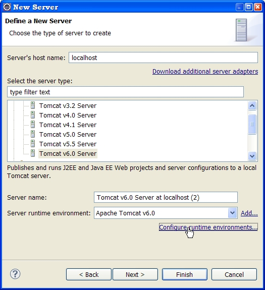
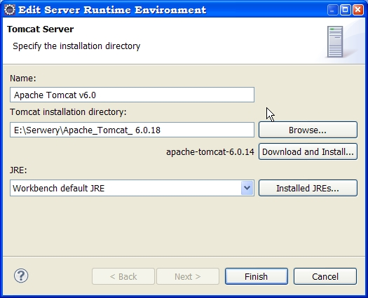
B. Utworzenie projektu (New ... Dynamic Web Project)
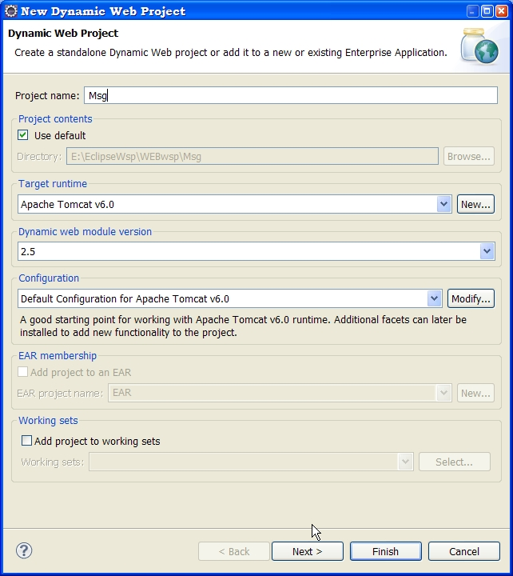
C.
Zostanie stworzona odpowiednia struktura katalogowa. Po Java
rResources mo¿emy pisac kod serwletu.
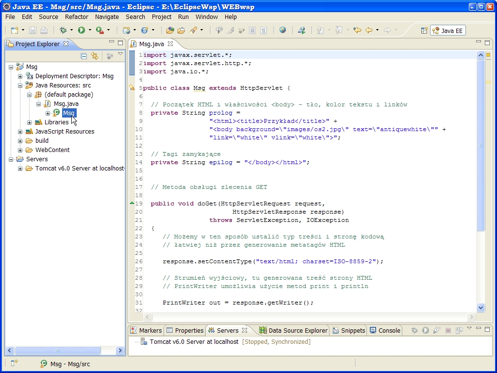
C. Dodatkowe zasoby (obrazki, pliki html) dodajemy do WebContent
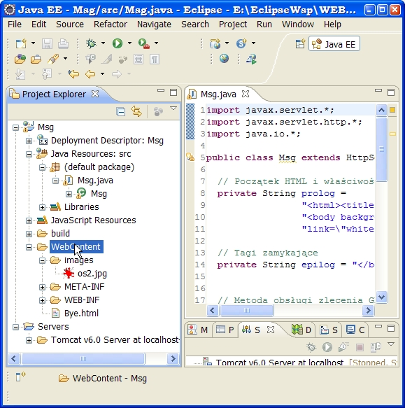
D.
Deskryptor kontekstu bêdzie wygenerowany automatycznie - mo¿emy go
poprawiaæ
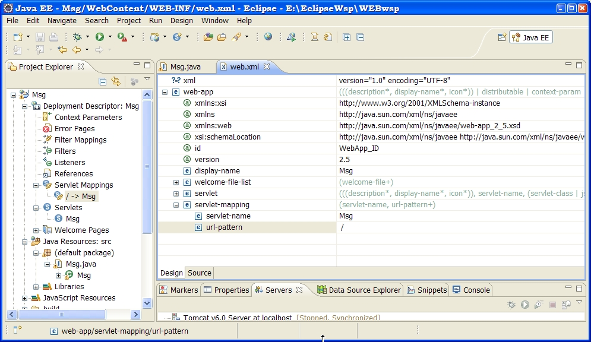
E. Uruchamiamy aplikacjê w
wewnêtrznej przegl¹darce Eclipse (Run As ... Run on server)
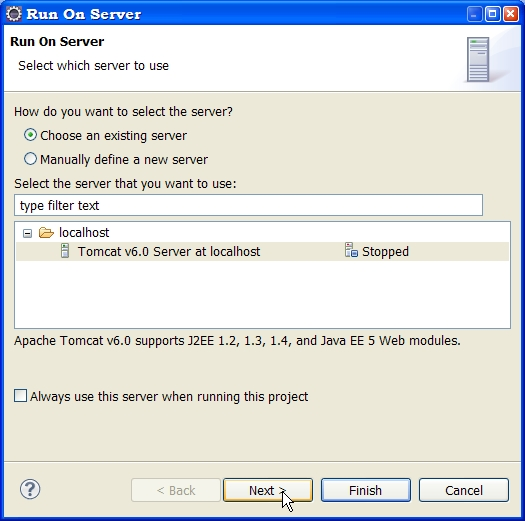
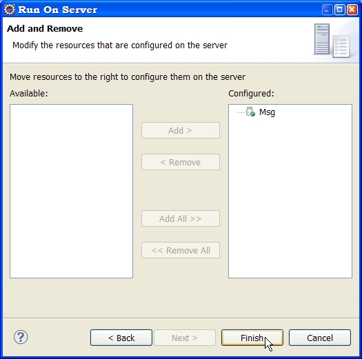
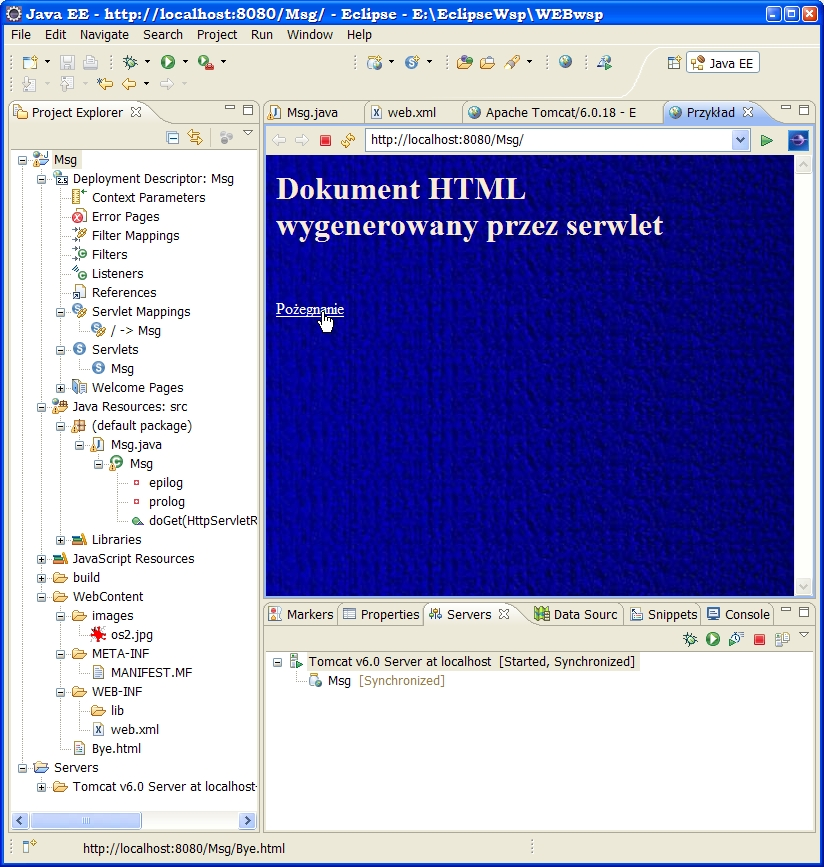
F.
Eksportujemy aplikacjê do pliku WAR
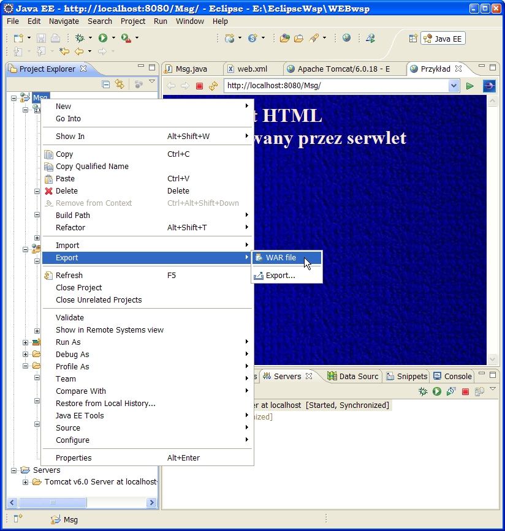
i
wdra¿amy w srodowisku roboczym Tomcata:
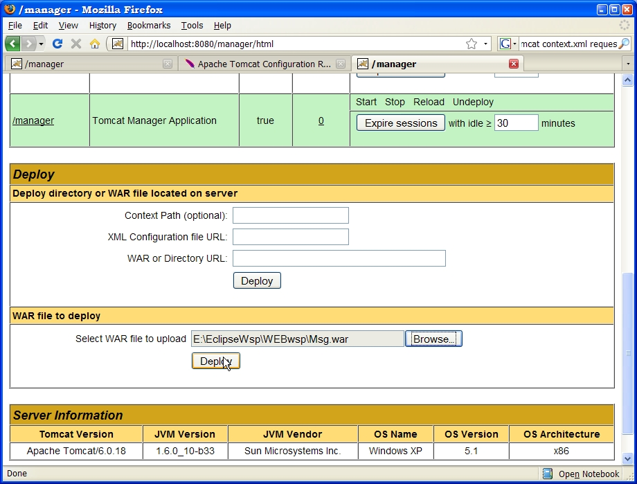